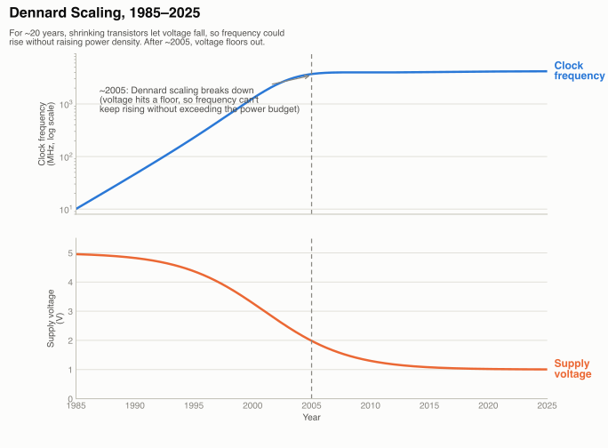
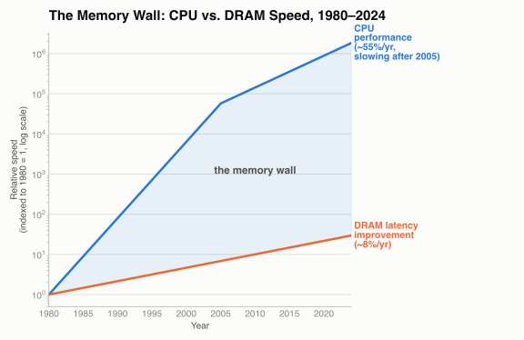
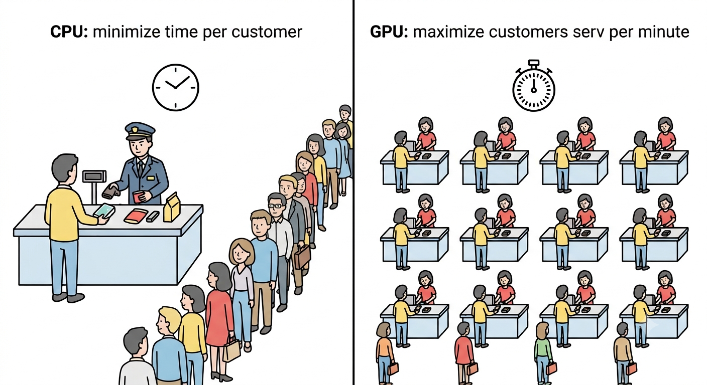

The End of Free Lunch
Module 1: The Case for GPUs
Session 1 · Sep 14 · The End of Free Lunch
Today’s Plan
- Why serial CPU performance stopped improving for free
- Three physical walls: clock speed, power, memory
- Why the industry’s answer was “more cores,” and why GPUs are the extreme end of that answer
20 Years of Free Performance
- From roughly 1980 to 2004, CPU clock speed doubled about every 18 months (a corollary of Moore’s Law, below)
- Every year, the exact same program ran faster on new hardware — with zero code changes
- Developers could treat performance as someone else’s problem: just wait for next year’s chip
Moore’s Law, Precisely
“The number of transistors on an integrated circuit doubles roughly every two years, at roughly constant cost.” — Gordon Moore, 1965
- Moore’s Law is about transistor count, not clock speed directly
- For ~40 years, more transistors did translate into higher clock speed, because of a companion effect: Dennard scaling
- Dennard scaling (1974): as transistors shrink by a factor, you can also lower their voltage by that same factor — so power density stays roughly constant even as clock speed rises
- Transistor count kept doubling. Clock speed did not — Dennard scaling broke first (next slide)
Clock Speed Stagnation

- Single-core clock speed has been stuck at ~3–4 GHz for two decades
- Single-thread performance still creeps up (better branch prediction, bigger caches, deeper pipelines) — but those are diminishing returns, not doubling every 18 months
- Something had to replace “just run it at a higher frequency”
The Power Wall

The Power Wall
- Dynamic power draw of a chip is approximately \(P \approx C \cdot V^2 \cdot f\) (capacitance × voltage² × frequency)
- Under Dennard scaling, shrinking transistors let you lower \(V\) every generation — so raising \(f\) didn’t raise power density
- Around 2005 (~90 nm), \(V\) hit a floor: drop it further and transistors leak current even when “off,” wasting power and generating heat with no benefit
- Without falling \(V\), raising \(f\) directly raises power density — past what air cooling (and eventually any practical cooling) can remove from a chip the size of a fingernail
The Memory Wall

The Memory Wall
- CPU compute throughput improved dramatically for decades; DRAM latency (time to fetch one value) improved only modestly over the same period
- A single memory fetch has taken roughly 100 ns for a long time — during which a modern CPU core could execute hundreds of instructions
- Consequence: a core that issues one memory request and then waits idles for hundreds of cycles unless something else fills that time
- CPUs hide this with large caches and speculative prefetching; GPUs hide it differently — by keeping thousands of other threads ready to run while one thread waits (Module 2)
The Industry’s Answer: More Cores
- Clock speed capped by the power wall. Memory latency capped by physics. Single-core performance alone could no longer 10× every few years
- The industry’s pivot (mid-2000s onward): stop making one core faster, put more cores on the chip instead
- Consumer CPUs went from 1 core (pre-2005) → 2 → 4 → 8 → today’s 16–32+ core desktop chips
- A GPU is the same idea taken to its logical extreme: instead of tens of powerful cores, thousands of small, simple ones
One Expert vs. a Crowd

- A CPU core is built to finish one task as fast as possible — deep pipelines, branch prediction, large caches, all in service of low latency
- A GPU core is built to keep as many tasks moving simultaneously as possible, even if each one individually is slower — high throughput
- Neither is “better” in general — they’re optimized for different jobs. Session 2 puts real numbers on this comparison
Amdahl’s Law — A First Look
Even if you accelerate 95% of a program perfectly on parallel hardware, the unaccelerated 5% caps your total speedup:
\[\text{Speedup} \leq \frac{1}{1 - 0.95} = \frac{1}{0.05} = 20\times\]
- No matter how many cores (or GPU threads) you throw at the parallel 95%, the serial 5% eventually dominates the wall-clock time
- This is why “just add more cores” has diminishing returns, and why which part of a problem you parallelize matters as much as how well
- We derive and apply this formally in Module 3 — for now, just the intuition: serial code is a ceiling on parallel speedup
This Week
- Session 2 (Wed, Sep 16): CPU vs. GPU design philosophy, with real numbers — FLOPS, memory bandwidth, SIMD
- Lab 03 (Fri, Sep 18): Benchmark a loop vs. a vectorized NumPy call; measure the actual speedup ratio and compute GFLOP/s
COSC435 · Module 1 · Intro